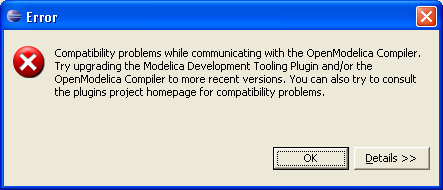

Problem: You have problems switching to the Modelica perspective, or have problems with using any of the Modelica views.
Solution: Make sure that you have Java 5.0 (aka 1.5) installed on your system. If you get an error message that says "Unsupported major.minor version 49.0" then that is a strong indication that you have an old version of Java.
Problem: 
Solution: Make sure that you have a correct version of OMC installed. See http://www.ida.liu.se/~pelab/modelica/OpenModelica/MDT/ for information about the currently supported OMC version.
Problem: This problem can arise if you have upgraded OMC but an old version of OMC is still running in the background.
Solution: Terminate all OMC processes. They're typically named after the OMC binary, i.e. omc.exe or omc. If the problem persists, as a last resort, restart your computer.
Problem: If you, for example, can choose from two different Modelica perspectives when choosing perspective.
Solution: This probably means that you have two or more versions of MDT installed. To remove any old versions, go into the eclipse/plugins folder and remove all folders labeled with older versions of MDT.